Лабораторная работа 1. Работа с сокетами
Автор: Сигаева Ксения. Группа: K3340.
Номер в журнале: 26. Вариант 2 — решение квадратного уравнения.
Цель
Изучить клиент-серверное взаимодействие через UDP и TCP, устройство HTTP и одновременную работу нескольких клиентов.
Средства реализации
Использован Go и его стандартная библиотека. Пакет net предоставляет TCP/UDP-соединения.
Для одновременной обработки подключений использованы горутины.
Общие данные чата и журнала защищены мьютексами.
HTTP-запросы разбираются и ответы формируются вручную, без HTTP-сервера из net/http.
Все команды ниже запускаются из корня laboratory_work_1.
1. Обмен по UDP
Файлы: task1/server/main.go, task1/client/main.go.
Сервер слушает 127.0.0.1:8001, получает датаграмму через ReadFrom, выводит сообщение
и отправляет ответ через WriteTo по адресу отправителя.
Клиент отправляет Hello, server, получает и выводит Hello, client.
UDP сохраняет границы датаграмм, но не гарантирует доставку; у клиента установлен таймаут.
2. Вычисления по TCP
Файлы: task2/server/main.go, task2/client/main.go.
Адрес: 127.0.0.1:8002. Клиент читает a, b, c с клавиатуры и отправляет строку
с тремя числами. Сервер решает уравнение ax² + bx + c = 0 и возвращает строку результата.
Граница сообщения — перевод строки: TCP передаёт поток байтов, а не отдельные сообщения.
Дискриминант: D = b² − 4ac. При D > 0 два корня, при D = 0 один, при D < 0 действительных корней нет. При a = 0 обрабатывается линейное уравнение. При некорректном вводе сервер возвращает сообщение об ошибке.
Примеры для демонстрации:
| Ввод | Ожидаемый результат |
|---|---|
| 1 -3 2 | 2 и 1 |
| 1 2 1 | -1 |
| 1 0 1 | Нет действительных корней |
| 0 2 -4 | Линейное уравнение, корень 2 |
| 0 0 0 | Бесконечно много решений |
| 0 0 1 | Решений нет |
| abc 2 3 | Ошибка ввода |
3. HTML-страница через HTTP
Файлы: task3/main.go, task3/index.html.
Сервер читает HTML-файл при запуске, принимает TCP-соединение, считывает заголовки запроса
до пустой строки и отправляет HTTP-ответ:
HTTP/1.1 200 OK
Content-Type: text/html; charset=utf-8
Content-Length: <число байтов HTML>
Connection: close
<содержимое index.html>
В коде строки HTTP разделены \r\n. После ответа соединение закрывается.
4. Многопользовательский TCP-чат
Файлы: task4/server/main.go, task4/client/main.go. Адрес: 127.0.0.1:8004.
Для каждого подключения сервер запускает go handle(conn).
Первой строкой клиент передаёт имя, следующими — сообщения.
Сервер хранит соответствие соединений и имён, рассылает сообщения всем, кроме отправителя.
Мьютекс защищает карту клиентов и доступ к очередям рассылки.
У каждого клиента есть очередь на 64 сообщения и отдельная горутина записи с таймаутом 5 секунд.
При переполнении очереди медленный клиент отключается, не задерживая остальных.
При exit или разрыве соединения пользователь удаляется, остальные получают уведомление.
Один и тот же клиент запускается в нескольких терминалах. Получение сообщений и ввод не блокируют друг друга благодаря горутине.
5. Веб-сервер GET/POST
Файл: task5/main.go. Адрес: 127.0.0.1:8005.
Сервер обслуживает подключения в отдельных горутинах и вручную читает метод, путь и заголовки.
Тело POST считывается полностью по Content-Length через io.ReadFull.
| Запрос | Действие |
|---|---|
| GET / | HTML-форма и таблица оценок |
| POST / | Добавление subject и grade, перенаправление на GET / |
| Другой путь | 404 |
| Другой метод | 405 |
Форма передаёт application/x-www-form-urlencoded. Для разбора полей используется url.ParseQuery.
Оценки хранятся в map[string][]int: Математика → [5, 4].
Запись оценок защищена sync.RWMutex. Для построения страницы под блокировкой
создаётся копия журнала; HTML формируется после освобождения блокировки.
Так каждый предмет представлен одной строкой таблицы. Названия предметов экранируются перед выводом HTML.
Выбрана шкала 2–5; оценки хранятся в оперативной памяти до перезапуска.
Длина тела запроса задаётся заголовком Content-Length. После ответа соединение закрывается.
Демонстрация
Задание 1
Запуск UDP-сервера.
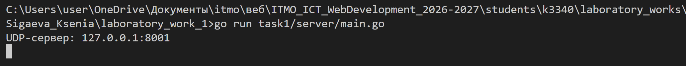
Получение сообщения клиента на сервере.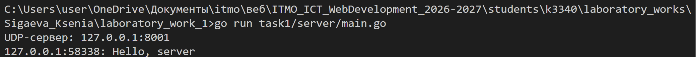
Ответ UDP-сервера клиенту.
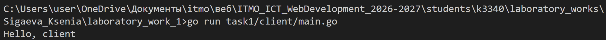
Повторное обращение к UDP-серверу.
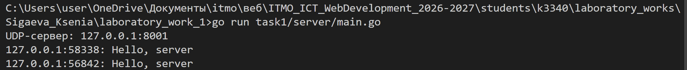
Задание 2
Запуск сервера решения уравнений.
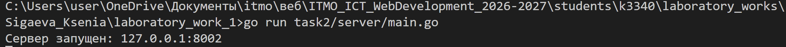
Два корня уравнения x² − 3x + 2 = 0.
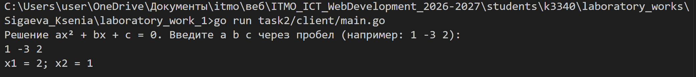
Решение линейного уравнения 3x + 4 = 0.
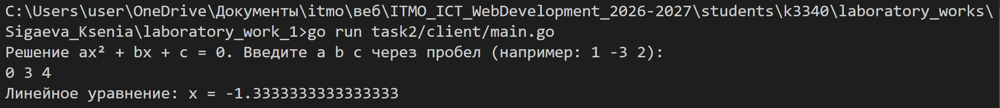
Сообщение при вводе двух коэффициентов вместо трёх.
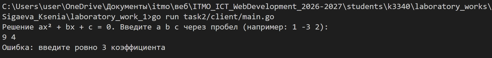
Задание 3
Запуск HTTP-сервера.
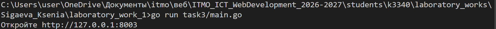
Страница из файла index.html в браузере.
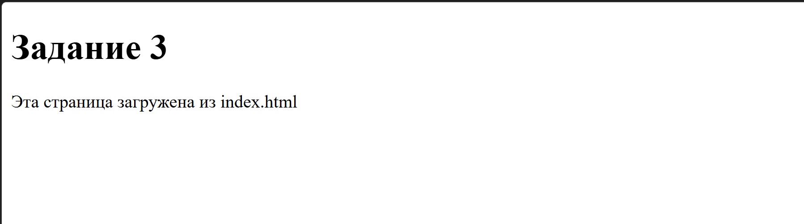
Задание 4
Запуск сервера чата.
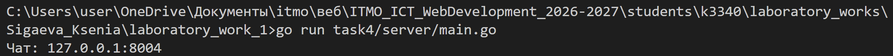
Переписка в терминале ennie.
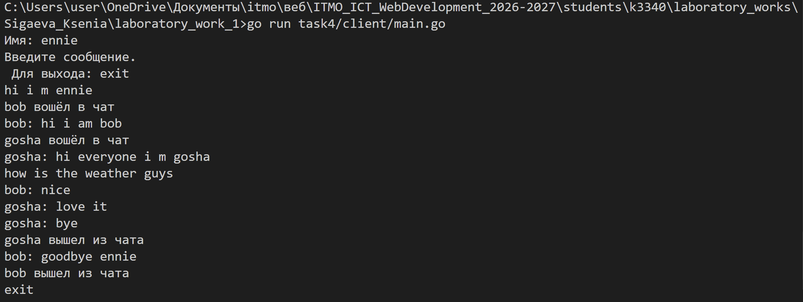
Переписка и выход пользователя bob.
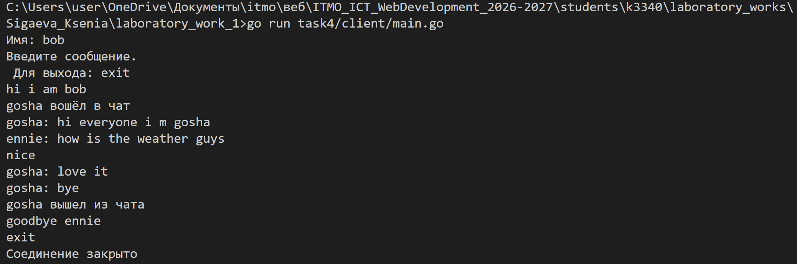
Переписка и выход пользователя gosha.
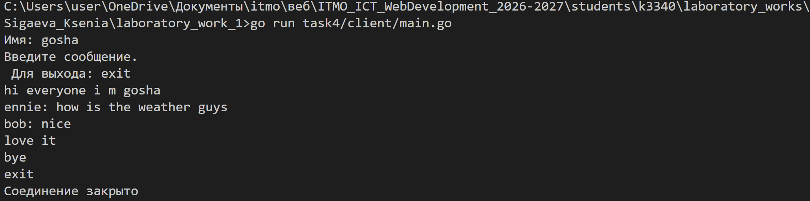
Подключение и отключение трёх участников на сервере.
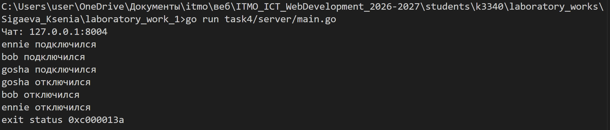
Задание 5
Запуск сервера журнала оценок.
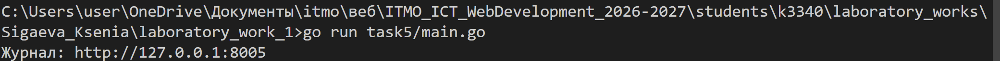
Журнал с оценками, сгруппированными по дисциплинам.
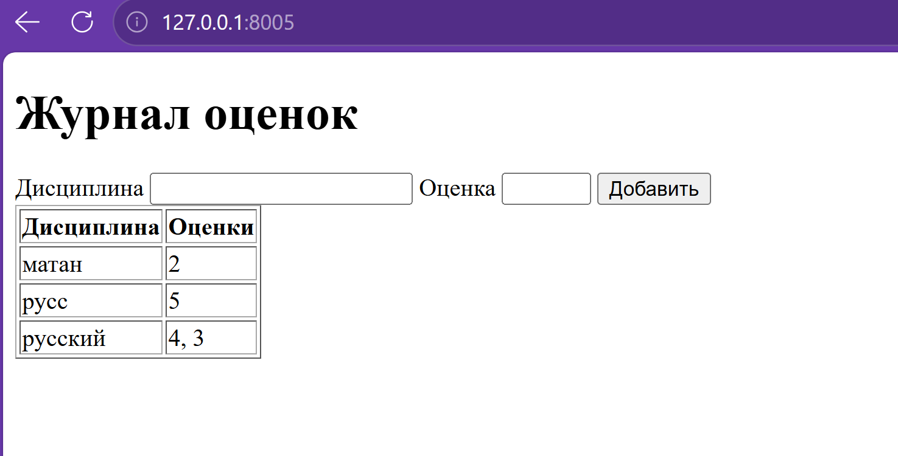
Вывод
В ходе работы я изучила обмен данными через сокеты TCP и UDP на Go. Для HTTP-серверов разобрала структуру запросов и вручную сформировала ответы. В чате отделила отправку сообщений каждому клиенту, а в журнале защитила общие данные от одновременного изменения несколькими обработчиками.